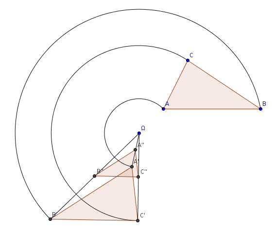
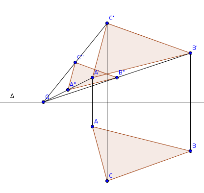

| Choisissez votre langue ! | Choose your language ! |
Nous supposons également connus les résultats relatifs aux et aux du plan.
Similitudes directes
We also assume that we know the results relating to and to of the plane.
Direct (or positive) similarities
Elle peut s'écrire de façon unique comme le produit commutatif d'une rotation de centre Ω et d'une homothétie de centre Ω et de rapport λ.
It can be written in a unique way as the commutative product (composite)) of a rotation with center Ω and a homothety (dilation)) with center Ω and ratio λ.

démonstration
Nous désignons par \( \displaystyle \overrightarrow{f} \) l'application linéaire associée à f.Si λ=1 alors \( \displaystyle \overrightarrow{f} \) est un déplacement et si ce n'est pas une translation alors c'est une rotation (revoir les résultats sur les ).
Si λ ≠ 1 alors \( \displaystyle \overrightarrow{f}-Id \) est injective.
En effet \( \displaystyle \left \| \overrightarrow{f}\left ( \overrightarrow{v} \right ) \right \|=\lambda \left \| \overrightarrow{v} \right \| \) , donc \( \displaystyle f\left ( \overrightarrow{v} \right )=\overrightarrow{v} \) , n'est possible que si \( \displaystyle \overrightarrow{v}=\overrightarrow{0} \) .
\( \displaystyle \overrightarrow{f}-Id \) étant injective elle est surjective.
Soit maintenant M un point quelconque du plan P et soit \( \displaystyle \overrightarrow{v} \) le vecteur \( \displaystyle \overrightarrow{Mf(M)} \) .
Posons \( \displaystyle g = T_{- \overrightarrow{v}} \circ f \) alors g est une application du groupe affine du plan laissant fixe M.
Comme \( \displaystyle \overrightarrow{f}-Id \) est surjective, il existe un vecteur \( \displaystyle \overrightarrow{w}\in \overrightarrow{P} \) tel que :
\( \displaystyle \overrightarrow{v}=\overrightarrow{f}\left ( \overrightarrow{w} \right )-\overrightarrow{w} \)
Posant \( \displaystyle \Omega=M-\overrightarrow{v} \) on a :\( \displaystyle f\left ( \Omega \right )=f\left ( M \right )+\overrightarrow{f}\left ( \overrightarrow{M\Omega} \right )=f(M)+\overrightarrow{f}\left ( \overrightarrow{w} \right )=f(M)-\overrightarrow{v}-\overrightarrow{w}=M-\overrightarrow{w}=\Omega \)
Si Ω' est un autre point fixe de f, \( \displaystyle \overrightarrow{\Omega \Omega '}=\overrightarrow{f(\Omega )f\left ( \Omega ' \right )} \) donc \( \displaystyle \left \| \overrightarrow{\Omega \Omega'} \right \|=\lambda \left \| \overrightarrow{\Omega \Omega'} \right \| \) avec λ ≠ 1 donc Ω=Ω'.Soit h l'homothétie de centre Ω et de rapport 1/λ.
Alors hof est un déplacement admettant Ω pour point fixe c'est donc une rotation de centre Ω soit g et on a \( \displaystyle h^{-1}\circ g=g \circ h^{-1}=f \) .
proof
We designate by \( \displaystyle \overrightarrow{f} \) the linear map associated with f.If λ=1 then \( \displaystyle \overrightarrow{f} \) is a proper isometry and if it is not a translation then it is a rotation (review the results on the ).
If λ ≠ 1 then \( \displaystyle \overrightarrow{f}-Id \) is injective.
Indeed \( \displaystyle \left\| \overrightarrow{f}\left ( \overrightarrow{v} \right ) \right \|=\lambda \left \| \overrightarrow{v} \right \| \) , so \( \displaystyle f\left ( \overrightarrow{v} \right )=\overrightarrow{v} \) , is only possible if \( \displaystyle \overrightarrow{v}=\overrightarrow{0} \) .
\( \displaystyle \overrightarrow{f}-Id \) being injective it is surjective.
Now let M be any point of the plane P and let \( \displaystyle \overrightarrow{v} \) the vector \( \displaystyle \overrightarrow{Mf(M)} \) .
Let's set \( \displaystyle g = T_{- \overrightarrow{v}} \circ f \) then g is a map of the affine group of the plane leaving M fixed.
Like \( \displaystyle \overrightarrow{f}-Id \) is surjective, there is a vector \( \displaystyle \overrightarrow{w}\in \overrightarrow{P} \) such as :
\( \displaystyle \overrightarrow{v}=\overrightarrow{f}\left ( \overrightarrow{w} \right )-\overrightarrow{w} \)
Setting \( \displaystyle \Omega=M-\overrightarrow{v} \) we have :\( \displaystyle f\left ( \Omega \right )=f\left ( M \right )+\overrightarrow{f}\left ( \overrightarrow{M\Omega} \right )=f(M)+\overrightarrow{f} \left ( \overrightarrow{w} \right )=f(M)-\overrightarrow{v}-\overrightarrow{w}=M-\overrightarrow{w}=\Omega \)
If Ω' is another fixed point of f, \( \displaystyle \overrightarrow{\Omega \Omega '}=\overrightarrow{f(\Omega )f\left ( \Omega ' \right )} \) so \( \displaystyle \left\| \overrightarrow{\Omega \Omega'} \right \|=\lambda \left \| \overrightarrow{\Omega \Omega'} \right \| \) with λ ≠ 1 so Ω=Ω'.Let h be the homothety (dilation) with center Ω and ratio 1/λ.
Then hof is a proper isometry admitting Ω for fixed point it is therefore a rotation with center Ω let g and we have \( \displaystyle h^{-1}\circ g=g \circ h^{-1}=f \) .
Similitudes indirectes
Indirect (negative, opposite) similarities
Dans ce cas la similitude admet un seul point fixe qui est le centre de l'homothétie.
In this case the similarity admits a single fixed point which is the center of the dilation.

démonstration
Si la similitude n'est pas un antidéplacement son rapport λ est différent de 1.Par le même raisonnement que ci-dessus f admet un seul point fixe Ω.
si h désigne l'homothétie de centre Ω et de rapport 1/λ hof est un antidéplacement laissant fixe Ω donc une symétrie orthogonale par rapport à une droite Δ passant par Ω.
proof
If the similarity is not an improper isometry its ratio λ is different from 1.By the same reasoning as above f admits a single fixed point Ω.
if h denotes the dilation with center Ω and ratio 1/λ hof is an improper isometry leaving fixed Ω therefore an orthogonal reflection with respect to a mirror ine Δ passing through Ω.
Figures semblables
Similar figures
- Deux segments de longueur non nulle sont toujours semblables.
- Deux cercles de rayons non nuls sont toujours semblables.
- Deux carrés sont toujours semblables.
- Deux rectangles ne sont semblables que si pour chacun d'eux le rapport Longueur/Largeur est le même.
- Two segments of non-zero length are always similar.
- Two circles with nonzero radii are always similar.
- Two squares are always similar.
- Two rectangles are similar only if for each of them the Length/Width ratio is the same.
|
Création Gilles Dubois
Created by Gilles Dubois
|
Janvier 2022
January 2022
|
Version mobile Jquery
Mobile Jquery version
|
|